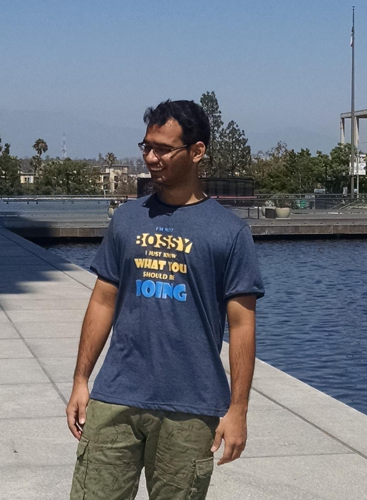

My name is Prakarsh Upmanyu. I am currently doing my masters in Computer Science from University of Southern California (USC). I will be graduating in May, 2018. My focus is Machine Learning and its applications. To know more about me, read on...
Education
University of Southern California (USC), Los Angeles, California- Master of Science in Computer Science
- August 2016 - May 2018 (Anticipated)
- Current GPA: 3.82
- Focus: Artificial Intelligence, Machine Learning, Applied NLP, Data Management
Delhi Technological University (formerly DCE), Rohini, New Delhi
- Bachelor of Technology in Software Engineering
- August 2010 - May 2014
- Final Percentage: 79.18%
- Graduated with title "First Class with Distinction"
- Focus: Software Development, Software Engineering, Algorithm Design and Analysis, Theory of Computation, Compiler Design, Data Structures, Database Management Systems